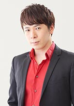

Yuuki Tai is a Japanese voice actor. He is affiliated with Rimax.
- Gender: Male
- Birthday: October 6, 1977
- Hometown: Tokyo, Japan
- Hobbies: Cleansing, and Plastic Models

| |
Yuuki Tai is a Japanese voice actor. He is affiliated with Rimax.
|
 |
|---|
| Peter | Black Butler: Book of Circus | Peter is a flying trapeze artists and performance with Wendy. He is short-tempered and unmannerly. He is prone to violence and often make rude, sarcastic remarks. |